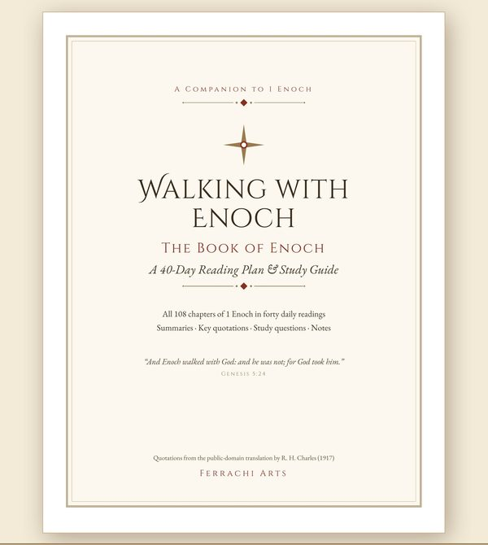

English
Walking with Enoch — 40-Day Book of Enoch Study Guide
A 64-page printable PDF that takes you through all 108 chapters of 1 Enoch in 40 short daily readings, with summaries, study questions and space for notes.
Key quotations come from the public-domain R. H. Charles translation (1917).
The summaries, questions, notes and charts were drafted with the help of AI tools, then checked, reviewed and edited by Ferrachi Arts. The engravings are genuine historical artworks in the public domain, not AI-generated.
View on Etsy